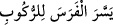
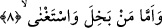
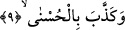

Burada “teysîr” in mânâsı, zorlaştırmanın karşılığı olan şey kolaylaştırmak değil
hazırlamaktır. Nitekim: “Herkes ne için yaratılmışsa ona hazırlanmıştır.” sözü de bu
anlamadır. Şu halde “Bir kötülüğün cezâsı ona denk bir kötülüktür.” (eş-Şûrâ,
42/40) veya “Onlara acı azabı müjdele!” (el-İnşikâk, 84/24) âyetlerinde olduğu gibi
burada geçen “teysir”in müşâkele[119] için; yâni zorluk mânâsında kullanıldığını
söylemeye ihtiyaç yoktur.
Bir kimse atı eğerleyip yularını takarak hazır hale getirdiği zaman “
(Atı
hazırladı/kolayladı)” denir.
“Yüsrâ” kelimesi, “eyser” kelimesinin müennesidir.
Âyetin mânâsı ise şöyledir: Biz onu Cennete girecek; ona ulaştıracak esaslar gibi,
kolaylık ve rahatlığa götürecek hasletlere hazırlar ve muvaffak kılarız. Amel ve güzel
sevap yolunu ona kolaylaştırırız, böylece amel onu Cennete ulaştırır.
Bu hasletin kolay olmakla nitelenmesi, kolaylığa götürmesi bakımından bir mecazdır.
Âyette işâret vardır ki Allah’a itâat, O’na yönelmek ve dünyadan yüz çevirmekle zâhir
olan, bu itâatı nefsine nisbet etmekten sakınan, bâtınında en güzel kelimeyi tasdik eden
kimseyi, en kolay hususiyete hazırlarız. Bu da bizim yüce huzurumuza ve en büyük
otağlarımıza vâsıl olmaktır.
8. Kim cimrilik eder, kendini müstağni sayar,
“Kim” malıyla “cimrilik eder” onu hayır yolunda harcamaz…
Cimrilik, insanın sâhip olduğu varlığını tutup hapsetmesi hak olmayan kimselerden
saklaması demektir. Cömertlik ise bunun aksidir.
“Kendini müstağni sayar” Allah Teâlâ katında olan şeylere değer vermez; yâni sanki
onlara ihtiyacı yokmuşçasına rağbet etmezse, bu yüzden Allah’tan korkup takvâ sâhibi
olmazsa, demektir. Ya da dünya şehvetleriyle yetinerek âhiret nimetinden kendisini
müstağni sayıp korkmaz, takvâ sâhibi olmazsa, demektir.
Buna göre insanın kendini müstağnî sayması korkmamasının bir sonucu olur ki
buradaki korkmama beşinci âyette geçen ‘korkup sakınmamının’ karlışığıdır. Böylece
iki âyet birbirinin karşılığı olmuştur.
9. En güzeli de yalanlarsa,
“En güzeli de” yâni yukarıda zikredilen birbirinden ayrılmaz mânâları “yalanlarsa”